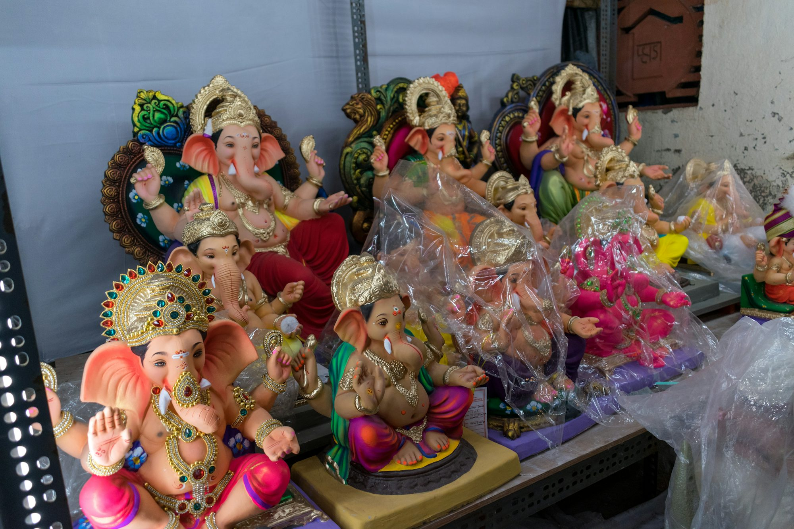
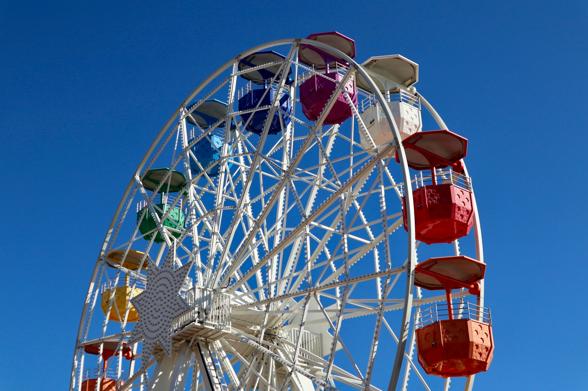
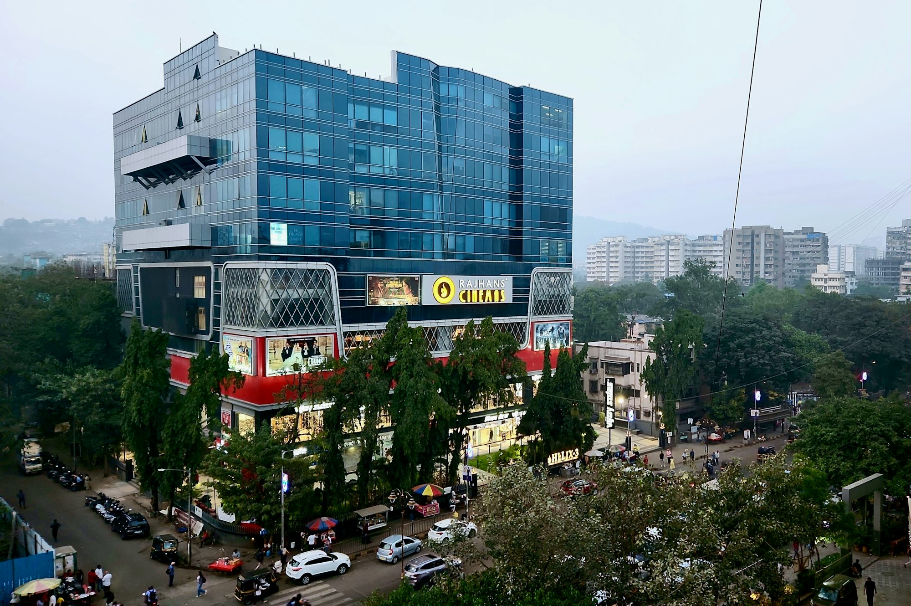
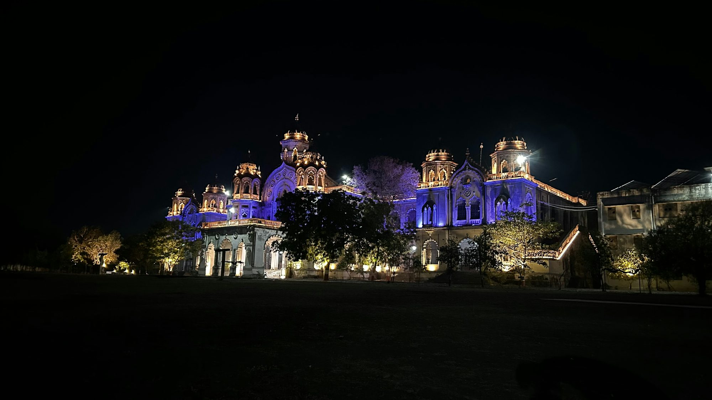

The Colorful World of Festivals: A Celebration of Life and Community
This article explores the rich variety of festivals around the world, highlighting their cultural significance and the joy they bring to communities.
Visual narratives



Knowledge hub
Sophia Martinez
Exploring the Thrills of Water Parks: A Splash of Fun for Everyone
This article takes an in-depth look at water parks, examining their attractions, the joy they bring, and why they are a popular destination for families and thrill-seekers alike.

Rediscovering Cinema: The Timeless Appeal of Different Theater Experiences

Exploring the Spectrum of Cinematic Experiences: A Journey Through Movie Theaters
This article examines various types of movie theaters, highlighting their unique attributes and the diverse experiences they offer to audiences.

November 21, 2025
Lucas Fernandez
The Art of Celebration: Exploring Cultural Festivals Around the World
Dive into the vibrant world of cultural festivals, where traditions, music, and cuisine come together to celebrate heritage and community.
The Art of Cinematic Storytelling: Techniques That Captivate Audiences
This article explores the various storytelling techniques used in cinema, highlighting how filmmakers craft compelling narratives that resonate with viewers and evoke emotions.
Sofia Ramirez
The Joy of Festivals: A Celebration of Global Culture
This article explores the diverse world of festivals, highlighting their cultural significance, unique traditions, and the joy they bring to communities across the globe.
August 10, 2025
Sophia Martinez
The Allure of Themed Attractions: A Journey Through Imagination
This article delves into the enchanting world of themed attractions, exploring their diverse offerings, cultural impact, and the joy they bring to visitors of all ages.
Lucas Rivera
The Allure of Adventure: Exploring Outdoor Parks and Their Thrilling Offerings
Dive into the exciting world of outdoor adventure parks, examining their unique attractions, experiences, and the growing trend of outdoor recreation for all ages.

November 08, 2025
Cinematic Journeys: The Varied Landscape of Movie Theaters
This article explores the diverse range of movie theaters and their unique contributions to the overall cinematic experience, highlighting the appeal of each type.